Thaiwand Wall, Railey Beach, Thailand
From Rocks to Code
Hey fellow climbers, Thank you so much for stopping by and reading my personal climbing blogs. This is where I share my experience as an amateur climber, capturing moments of me, the rock, and my evolving journey. Before we dive in,
let me make one thing clear: this site is purely about my personal experiences. It is not a knowledge-sharing hub or a professional guide. I am also using this platform to practice and experiment with coding and programming, blending my passion for climbing with a growing interest in expanding my skill set.
At this point, this little disclaimer feels like my signature opening. Maybe it is the marketer in me, always making sure objectives are clear. Climbing is my passion, not my profession, but that does not make it any less exciting to share.
Now that we have cleared that up, it is time to talk about what really matters—climbing climbing and more climbing!
Celebrating One Year of Lead Climbing on Day 3 in Krabi
In this series, I’ve been sharing the highlights of my climbing trip, and if you missed the earlier posts, I’d recommend checking them out. On
day-1 , I tackled the
“Psycho Killer,” route, and on day two, I climbed
Carrie On
—both at the stunning
the North Wall
in Ao Nang, Krabi. Feel free to catch up by clicking the links!
Railey Adventures: A Day of Climbing, Connections, and Stunning Views
In my last blog, I left you with a bit of a cliffhanger about an exciting encounter. Remember when I mentioned running into familiar faces? It turns out some climbers from Bangkok, who I’d met at our local gym, were staying at the same hotel. What are the odds? Moments like these highlight the magic of the climbing community. Whether it’s the shared passion or Thailand’s limited crags, it’s always a joy to meet like-minded people
The Start of a New Climbing Crew
We met a wonderful couple in the lobby of our Ao Nang hotel. While sharing stories about my two days at the North Wall, I mentioned how much I enjoyed the climbs but would’ve appreciated the company of seasoned climbers. They could relate, and before long, we exchanged contacts and planned a climbing session at
Railey Beach
. Even better, the couple already had friends there, so our group grew to six climbers.
Ao Nang to Railey: A Scenic Start
The next morning, P Bell and I took a quick motorbike taxi to Ao Nang pier. For 100 Baht, we saved our energy for climbing instead of walking the 1 km distance. The pier was buzzing with activity, but getting round-trip tickets for 200 Baht (December 2024 prices) was easy.
The 15-minute boat ride to Railey Beach was magical. Picture crystal-clear waters, towering limestone cliffs, and the soothing rhythm of the waves. Even with a light drizzle, the journey was an experience to savor. At the dock, we met the couple and their friends
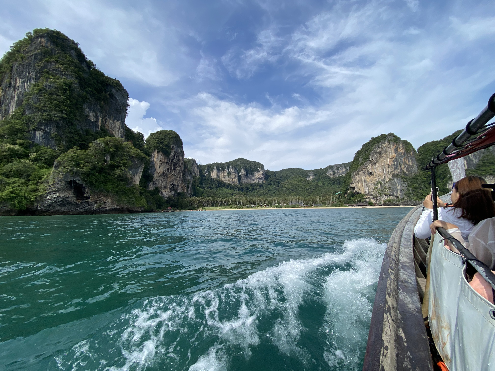

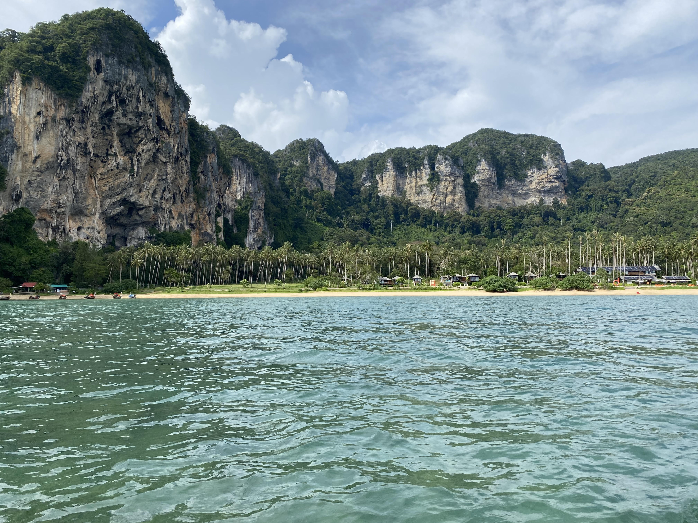

Climbing at Thaiwand Wall
Our group decided to climb at
Thaiwand Wall
, famous for its panoramic ocean views and diverse routes. The 15–20 minute hike to Thaiwand Wall was mostly straightforward, except for the final section, which featured a steep and slightly slippery hill. Fixed ropes along this challenging stretch provided much-needed support, making the climb to the wall manageable and well worth the effort
Standing at the base of the wall, I was awestruck by the turquoise waters and dramatic cliffs. The atmosphere was lively, with climbers tackling routes and tourists exploring the nearby
Bat Cave
.
If you ever visit, pack good hiking shoes—the trail can get tricky.

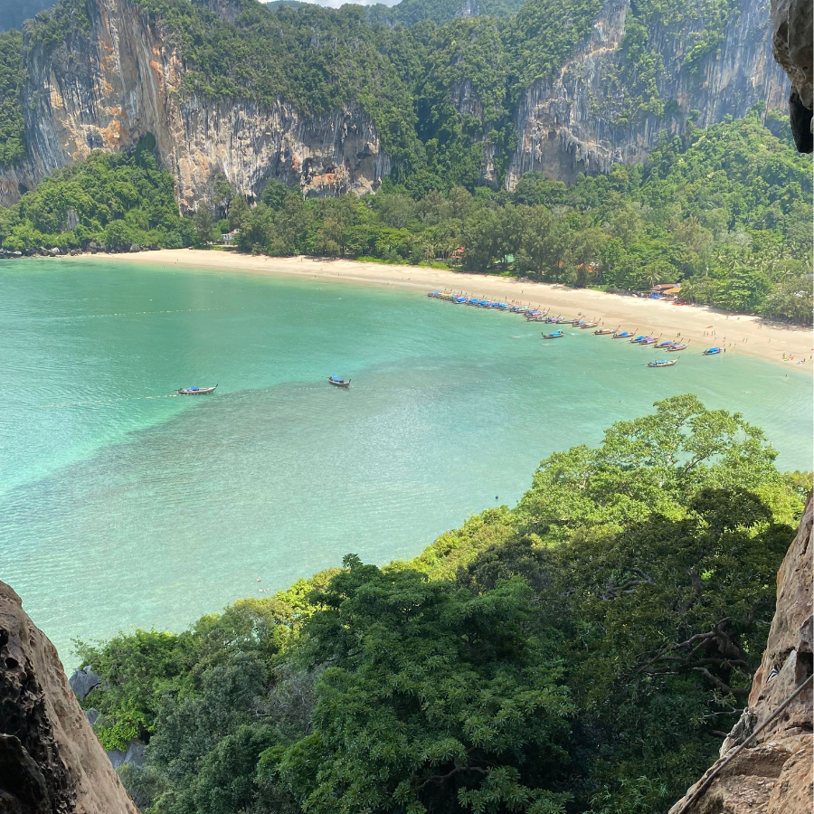
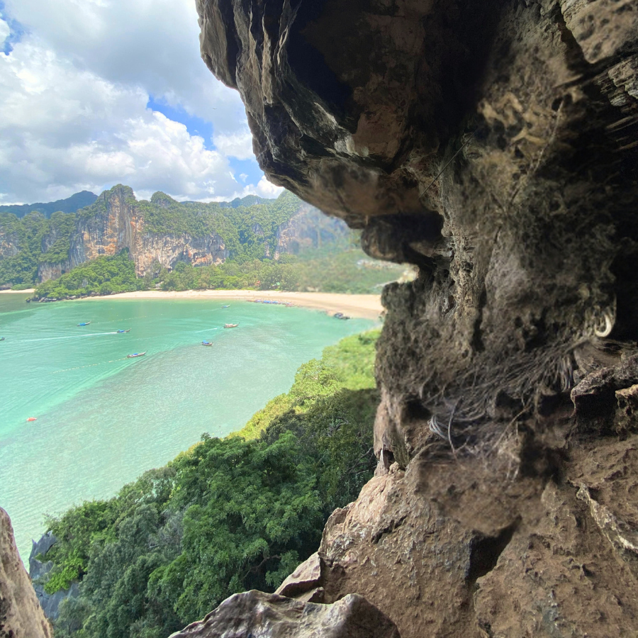
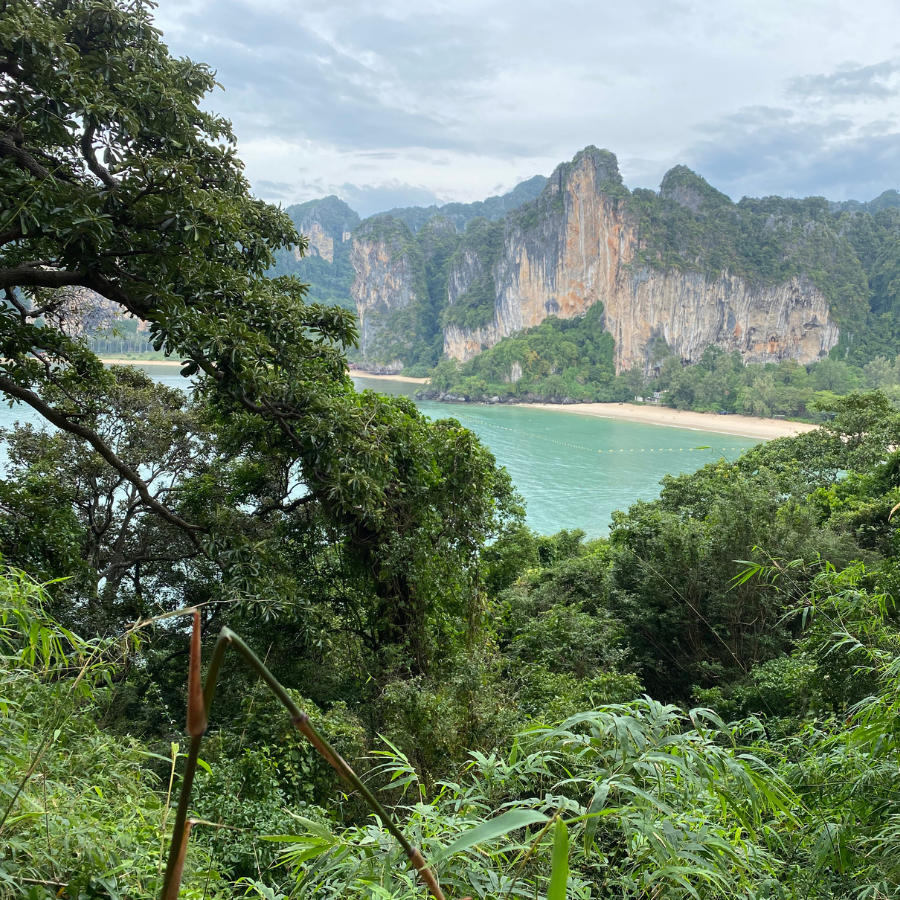
Our warm-up climb was on
It
.
(5c+, 12m). The grade was within my comfort zone, but I felt the usual pre-climb jitters as I tied in. The second bolt required maneuvering a tricky sloper hold, and the last bolt before the anchor tested my patience with a polished sloper above a cave-like gap. Clipping the anchor brought a wave of relief and satisfaction.
The next route became my favorite of the day. It was a juggy climb with plenty of footholds, about 20 meters high, offering stunning views from the anchor. While I couldn’t find its details online, it was the kind of route I love—challenging yet enjoyable, with a perfect photo backdrop
Lastly, I attempted a 6a+ or 6b route known for its iconic photo spot. Though I only top-roped and didn’t reach the photogenic crux, it was inspiring. I’ll be back to send it fully someday!
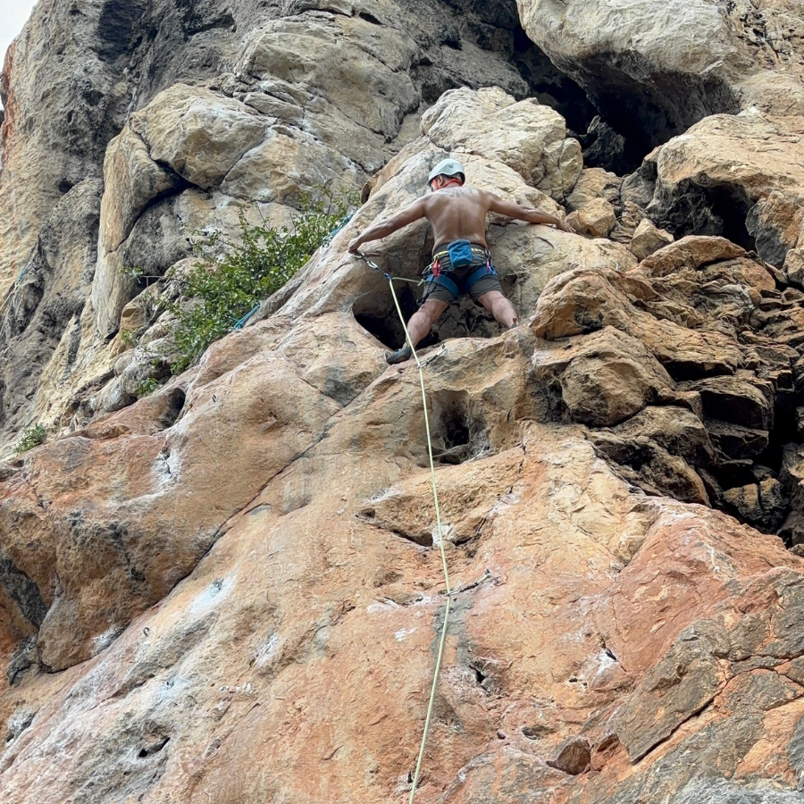

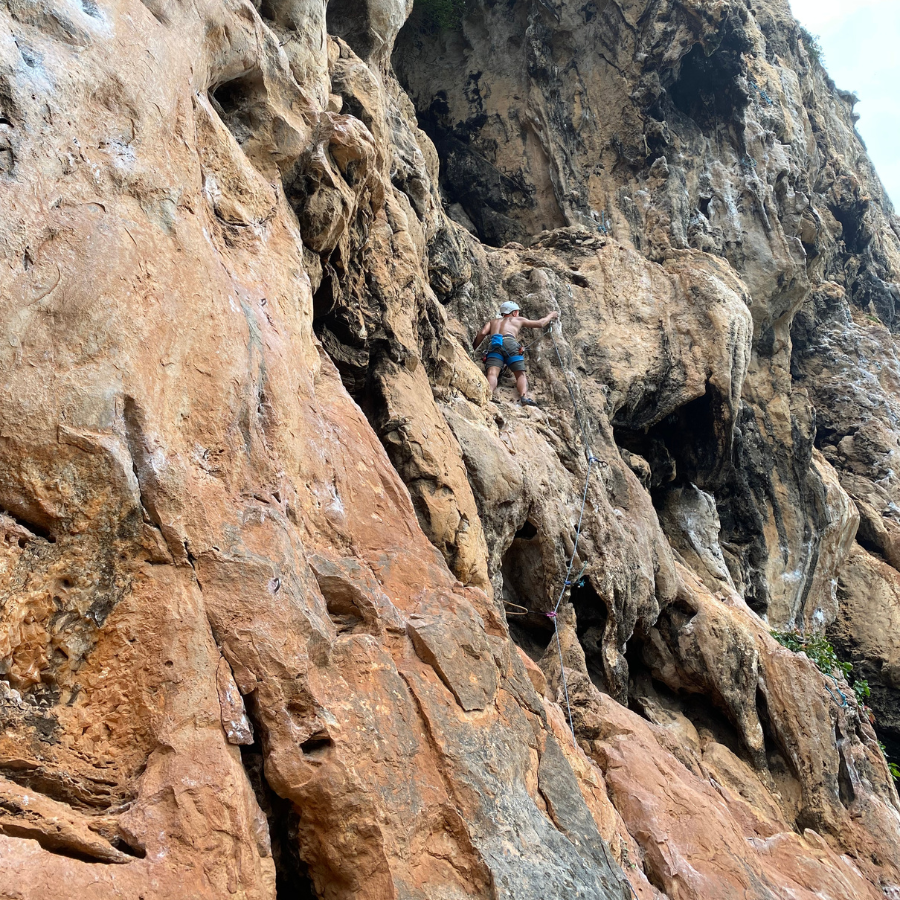

An Unforgettable Day
By 4 PM, the day had flown by. It was filled with laughter, climbs, and camaraderie. One couple in our group had a flight to catch, so we said our goodbyes and promising to climb together in Bangkok.
While P Bell opted for a rest day, I was thrilled to join the remaining climbers for another day at Railey. The excitement didn’t end there—the boat ride back to Ao Nang during sunset was serene. The sky shifted from blue to orange, the waves provided a soothing soundtrack, and the ocean breeze made for a perfect end to a perfect day.
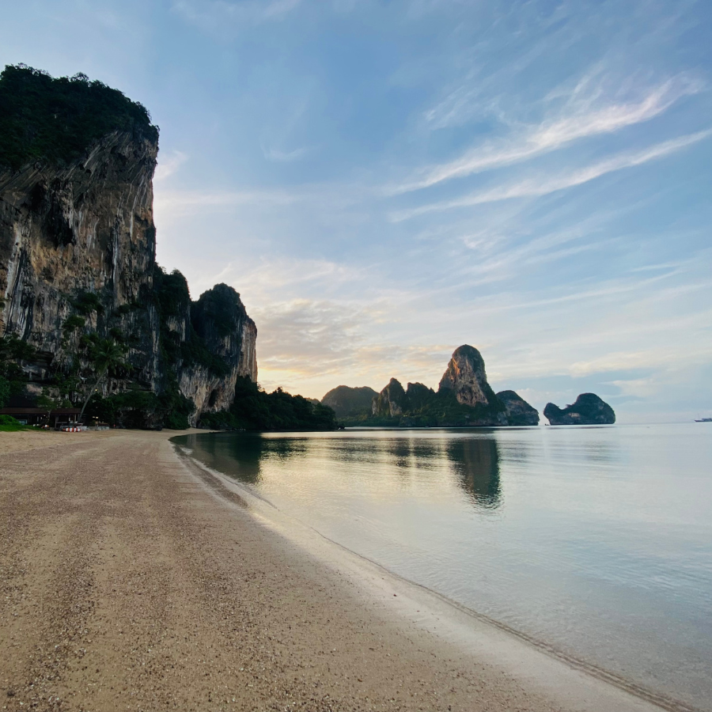
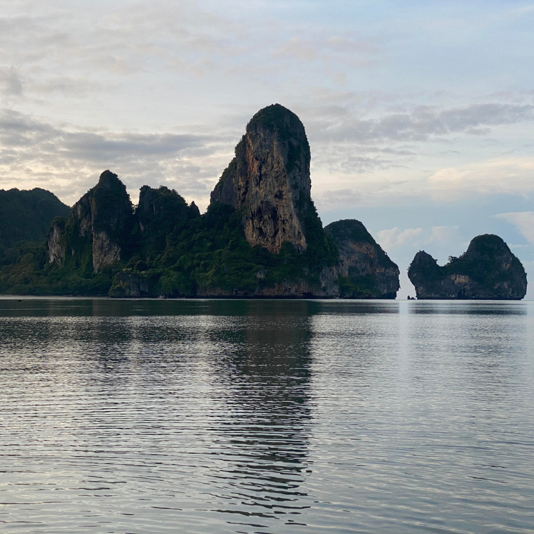
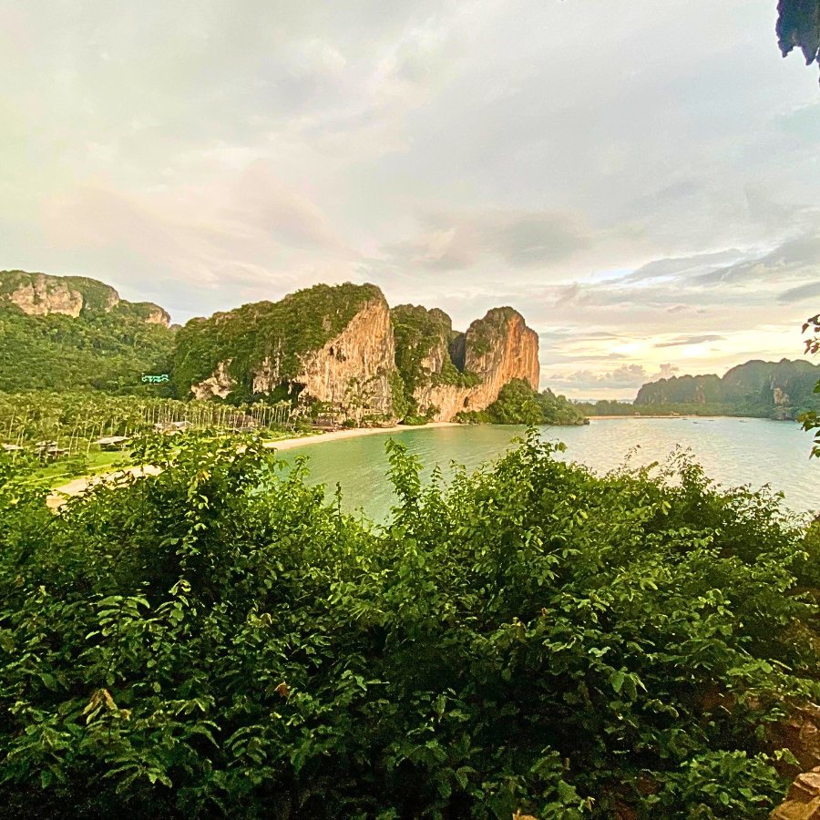
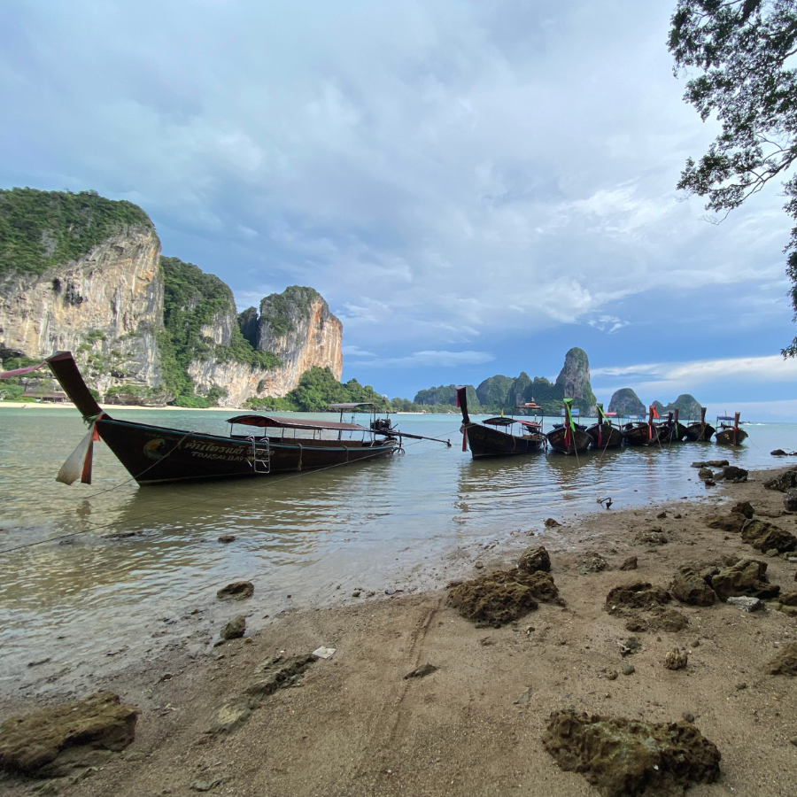
Why Climbing Means More to Me
For me, climbing isn’t about chasing grades or achievements. It’s about immersing myself in the moment—climbing at my own pace, enjoying the journey, the people, and the breathtaking views. It’s about steadily pushing my boundaries, not rushing to complete, and cherishing the memories created with a like-minded community.
Stay tuned for more adventures from Railey. Until next time, keep climbing and smiling!
ByrdieOnTheRocks :)